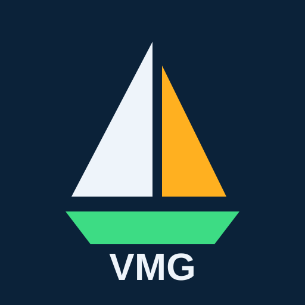

VMG Sailing
Version 0.9.0 (beta) · Last updated 28 September 2026
About
VMG Sailing shows your Velocity Made Good – how fast you are actually closing in on the next point of your route – together with speed and course over ground, bearing, distance and ETA. It runs in the browser and can be added to the home screen of your phone.
⚠ Safety notice
VMG Sailing is an aid for information only. It is not a navigation device and must not be used as the sole means of navigation.
- The maps (OpenStreetMap, OpenSeaMap) are compiled by volunteers. They are not official nautical charts and may be incomplete, outdated or wrong – in particular depths, hazards and seamarks.
- Phone GPS can be inaccurate or fail (shading, battery saving, background mode). Speed values are accurate to about ±0.1–0.2 kn at best.
- Always carry and use official charts, keep a proper lookout and follow the rules of the road and good seamanship. The skipper remains responsible for the safe navigation of the vessel at all times.
Privacy policy
In accordance with the Swiss Federal Act on Data Protection (FADP/revDSG) and, where applicable, the EU General Data Protection Regulation (GDPR).
Who is responsible
David Giger, Switzerland (contact: see Contact).
In short
VMG Sailing has no user accounts, no tracking, no analytics, no advertising and no cookies. We do not run a server that receives your data. Your position and your route never leave your device through us.
Data processed on your device
- Location – only after you allow it in your browser. It is used on your device to calculate VMG, speed, course, distance and ETA, and is not stored permanently, except:
- Route and settings – your route points, the start position of the route (with time) and your options are saved in your browser's local storage on this device only, so they are still there after a restart. Delete them with ✕ (delete route) or by clearing the site data of this website in your browser.
- Map areas you have viewed are kept in the browser cache so the map also works offline.
Third-party services
To show the map and run the search, your browser connects directly to the services below. Like every website, they receive technical data such as your IP address, browser type and the requested content (e.g. which map area is loaded). They process this under their own responsibility and privacy policies; some are located outside Switzerland (EU, UK, USA).
| Service | Purpose | Data |
|---|---|---|
| GitHub Pages (GitHub Inc., USA) | Hosting of this web app | IP address, request data |
| jsDelivr (CDN, worldwide) | Delivery of the map library Leaflet | IP address, request data |
| OpenStreetMap Foundation (UK) | Map tiles; place search (Nominatim) – only when you search | IP address, map area; search text |
| OpenSeaMap (Germany) | Seamark overlay | IP address, map area |
Your rights
You have the right to information about, correction and deletion of your personal data. As we do not store any personal data on our side, you can delete all data of this app yourself (see above). For questions use the contact below.
Terms of use
- VMG Sailing is currently provided free of charge as a beta version for private use.
- The app is provided "as is", without any warranty of accuracy, completeness, availability or fitness for a particular purpose. Map data and third-party services may change or be unavailable at any time.
- Use is at your own risk. See the safety notice. To the extent permitted by law, any liability for damages arising from the use of the app is excluded; liability for unlawful intent or gross negligence remains unaffected (Art. 100 Swiss Code of Obligations).
- Swiss law applies.
Credits & licences
- Map data © OpenStreetMap contributors, available under the Open Database License (ODbL).
- Seamarks © OpenSeaMap contributors, CC BY-SA 2.0.
- Place search by Nominatim, data © OpenStreetMap contributors.
- Map library Leaflet 1.9.4, BSD 2-Clause License:
BSD 2-Clause License Copyright (c) 2010-2023, Volodymyr Agafonkin Copyright (c) 2010-2011, CloudMade All rights reserved. Redistribution and use in source and binary forms, with or without modification, are permitted provided that the following conditions are met: 1. Redistributions of source code must retain the above copyright notice, this list of conditions and the following disclaimer. 2. Redistributions in binary form must reproduce the above copyright notice, this list of conditions and the following disclaimer in the documentation and/or other materials provided with the distribution. THIS SOFTWARE IS PROVIDED BY THE COPYRIGHT HOLDERS AND CONTRIBUTORS "AS IS" AND ANY EXPRESS OR IMPLIED WARRANTIES, INCLUDING, BUT NOT LIMITED TO, THE IMPLIED WARRANTIES OF MERCHANTABILITY AND FITNESS FOR A PARTICULAR PURPOSE ARE DISCLAIMED. IN NO EVENT SHALL THE COPYRIGHT HOLDER OR CONTRIBUTORS BE LIABLE FOR ANY DIRECT, INDIRECT, INCIDENTAL, SPECIAL, EXEMPLARY, OR CONSEQUENTIAL DAMAGES (INCLUDING, BUT NOT LIMITED TO, PROCUREMENT OF SUBSTITUTE GOODS OR SERVICES; LOSS OF USE, DATA, OR PROFITS; OR BUSINESS INTERRUPTION) HOWEVER CAUSED AND ON ANY THEORY OF LIABILITY, WHETHER IN CONTRACT, STRICT LIABILITY, OR TORT (INCLUDING NEGLIGENCE OR OTHERWISE) ARISING IN ANY WAY OUT OF THE USE OF THIS SOFTWARE, EVEN IF ADVISED OF THE POSSIBILITY OF SUCH DAMAGE.
VMG Sailing © 2026 David Giger. All rights reserved.
Contact
David Giger, Switzerland
Questions, feedback and bug reports:
github.com/DaveGiGi/VMG_APP/issues